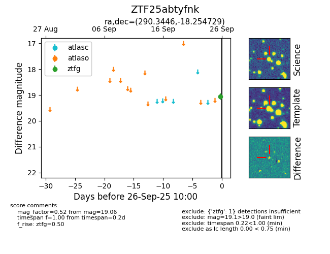

FINK: ZTF25abtyfnk
Lasair: ZTF25abtyfnk
ALeRCE: ZTF25abtyfnk
ZTF25abtyfnk (ztf,fink)
equatorial (ra, dec) = (290.3446,-18.25473)
galactic (l, b) = (19.6440,-14.65136)

last ztfg=19.06
1 ztfg detections